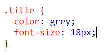
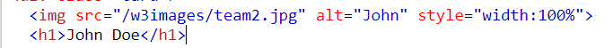

Dada esta regla CSS
- ¿Qué tipo de selector CSS es? Respuesta: Es un selector de... clase
- ¿Cuantas propiedades CSS establece este selector? Respuesta: dos propiedades color y tamaño de la fuente. La primera es color del texto gris y la segunda es el tamaño de la fuente en 18px
- ¿Cuál es el valor de la segunda propiedad? Respuesta: el valor de la segunda propiedad es de 18px
Analiza el siguiente tag img
- ¿Cuantos atributos tiene este tag? Respuesta: tres atributos: "src", "alt" y "style"
- ¿Cuál es el valor del atributo src? Respuesta: "/w3images/team2.jpg"
- Imagina que tenemos la siguiente reglas CSS. ¿Crees que el tamaño de la imagen sería de 1000px? ¿Por
qué?

Respuesta: No, necesariamente porque estamos hablando de 100% y no un valor especifico de 1000px. A menos que el tamaño del padre es 1000px, y la img se extienda en un 100%, no tendra un tamaño de 1000px
¿Cuál es el valor de la propiedad font-weight de este botón?
Respuesta: 400